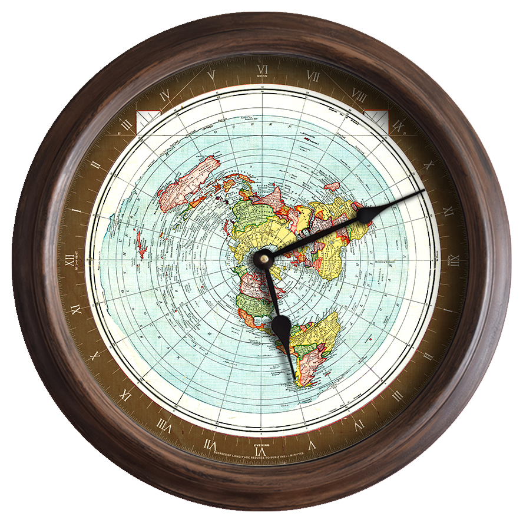
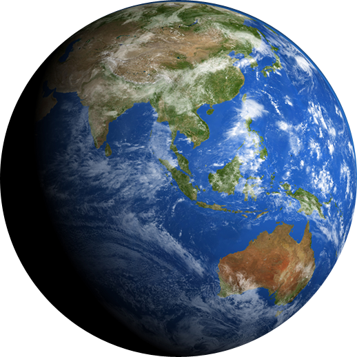

Tratamiento y dinamica de las Imagenes
Imagenes en local

Imagenes en servicio externo

Mapeado de las imagenes respecto al texto
 la tierra texto arriba
la tierra texto arribala tierra texto en medio
la tierra texto abajo
La tierra con el texto en el centro